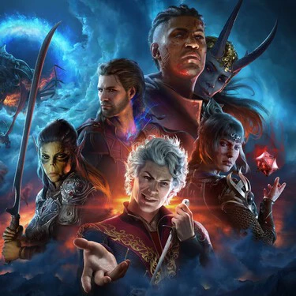
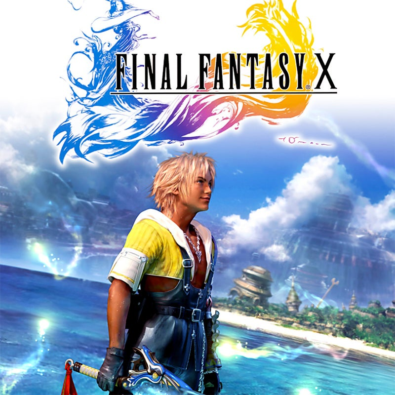
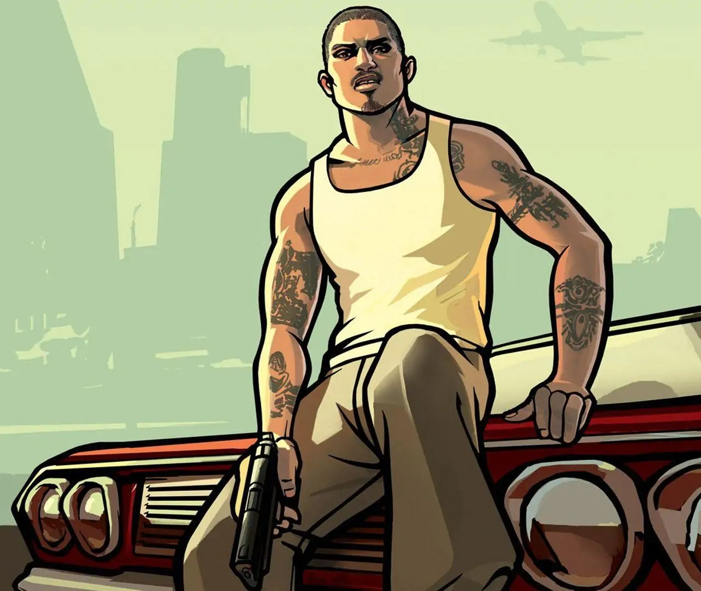
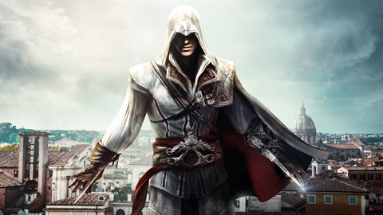
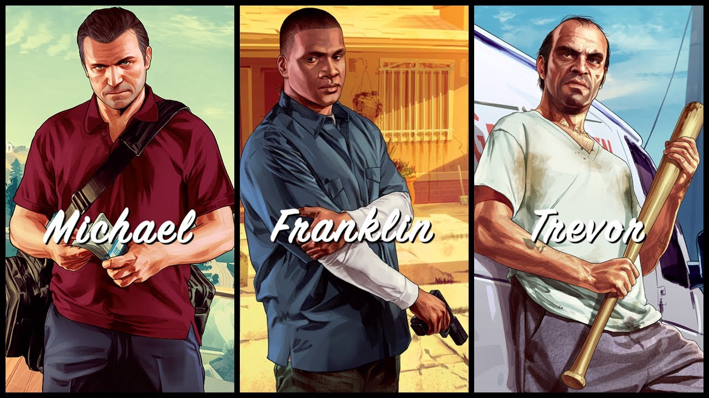

Baldur's Gate 3
Baldur's Gate 3 te transporta para uma aventura medieval a qual te proporciona ao longo de 3 atos diversas uma gama infinita de possibilidades para desenvolver o seu caminho. Seu combate é baseado na versão 5.0 do aclamado RPG de mesa Dungeons & Dragons o qual conta com um vasto acervo de classes e raças, agradando os fãs dos mais diversos estilos de jogo. Além de contar com vários personagens carismáticos cada qual com sua própria história que pode ser seguida conforme a vontade do Jogador.
Skyrim

O jogador entra na pele do último Dovahkiin, que tem o dever de livrar a província de Skyrim da tormenta causada pelos dragões e seu líder Alduin. O jogo se passa duzentos anos depois dos eventos de Oblivion. Na premissa, o Império começa a ceder territórios para as nações Élficas uma vez governadas, porque não há nenhum herdeiro para o trono do Imperador. Os Blades não tem ninguém para defender, e gradualmente morreram, foram assassinados ou se isolaram do resto do mundo. Depois do assassinato do Rei de Skyrim, uma guerra civil irrompe entre as raças nativas Nord — sendo a maioria aqueles que desejavam que Skyrim se separe do Império, e o resto sendo aqueles que desejam que Skyrim permaneça no Império.
Final Fantasy X
O jogo conta a história de Tidus, estrela do time de Blitzball. Durante um jogo de seu time, ele é sugado por uma entidade misteriosa e acorda no mar. Resgatado por pessoas estranhas, ele descobre que está 1000 anos no futuro. É revelado a Tidus por uma garota misteriosa da raça de humanos Al-Bhed que a entidade que o atacou é conhecida como Sin.
Shadow of The Colossus

O jogador recebe pouca informação sobre as histórias por trás dos personagens e as suas relações uns com os outros no decorrer de Shadow of the Colossus. O jogo se passa em um mundo de fantasia, com a maioria dos eventos ocorrendo dentro de uma vasta península não povoada conhecida como a "Terra Proibida", separada do mundo exterior por uma cordilheira a seu norte e mar ao sul e leste. A presença de ruínas e outras estruturas antigas indicam que a área já foi povoada.
Menções Honrosas
Antes de tudo gostaria de ressaltar o quanto foi difícil fazer essa lista pois deixei vários games que eu gosto de fora, irei citar alguns que ficaram de fora do top 4
Far Cry 3

Gta San Andreas
Red Dead Redemption 1 e 2

Assassin's Creed II
Resident Evil 4

Gta V
The Last of Us